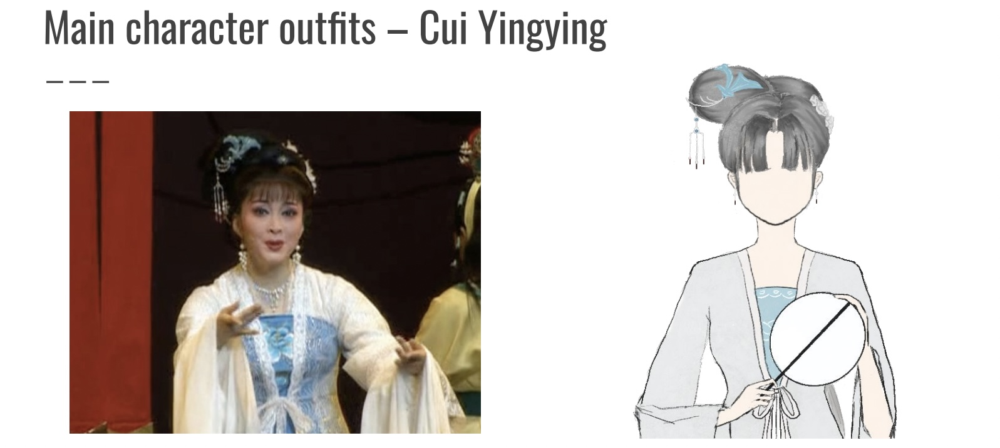

The Western Chamber
An interactive storytelling game design based on the classic Chinese opera play The Western Chamber. By taking on the role of the Hong Niang, the player helps the couple, the scholar Zhang Sheng and the daughter of a nobleman, Cui Yingying, get through the obstacles and successfully settle their marriage.
The Design and technical quality parts of this game design got 78 and 70 marks respectively in the assessment.
Why this?
The original intention of doing this project was to make traditional Chinese arts more accessible to young people. For me, what attracted me most to opera was their stories and tunes. But many of my friends around me think opera is only for older people or find it boring, they can't understand or feel the appeal of opera. Hence, I wanted to bring the voices that I find most enjoyable and appealing to a wider audience, and perhaps make more people understand the appeal of opera and reshape their understanding of it.
In addition, The Western Chamber was chosen as the prototype for this project because of its unique style of storytelling. In my perception, a love story is often found in a tragic setting in a play. But The Western Chamber is unusual in that it has a theme of love and characters that can lead to tragedy with a happy ending. The character that makes it so successful is Cui Yingying's maid, Hong Niang, who is always there to help Cui Yingying and Zhang Sheng throughout the story after seeing the madam's immoral behaviour. That's why I decided to tell the story from the perspective of Hong Niang in this game.
What is the Story of The Western Chamber?
The Western Chamber, written by Wang Shifu, tells the story of Cui Yingying, a young lady of the Sangguo, who, with the help of her maid, Hongniang, breaks through the shackles of the world and its elaborate rituals to become a woman of her own free will. In this story, the character of Hongniang often has to deal with people in various difficulties for the life of the young lady. The role of the Red Chamberlain in this story is huge, without the Red Chamberlain as the link between these two young people who dare not speak of their love and are bound by the rules of etiquette, this story is unlikely to come to a happy ending. Every difficulty they go through is like a copy of the game, with the Red Chamberlain acting as the intruder in the copy. This was the main inspiration for the project design.
How is it designed?
Requirement Design
Some Requirements that will support game design are listed.
Idealy Stakeholders
Functional & Non-Functional Requirement
Visually Design
The graphics are mainly ink and wash style, with a dark green background adding a sense of lightness and elegance to the whole screen. More attention is paid to the use of colour in the drawing of the characters and to fitting the costumes on the theatre stages.
The game is based on one of the versions of The Western Chamber performed by the Zhejiang Xiao Baihua Yue Opera Troupe. Therefore, the character designs are mainly based on the designs of this troupe, with some relative simplification due to the numerous and complex details and patterns of the costumes.

Comparison of in-game and real-life character costumes examples
Comparison of in-game and real-life character costumes examples - the Player
Aurally Design
The music also uses mainly audio from the stage but is a little fuzzy as the existing audio is from the 90s. For some parts that cannot be expressed through textual lines, audio of opera singing is used with associated animation to transition. For general character dialogue, simple click sounds are triggered when sentences are displayed to try to represent the drumbeat of the narration in the opera.
How the Prototype is produced?
Animated Clips Creation
Procreate is used to draw pictures of scenes and people on a tablet.
Adobe XD, is used to connect the trunk sections. For example, to start scenes with different section switching. XD is also responsible for the animations related to the backpack, such as opening it, closing it, saving items to it, and viewing item details.
Adobe Premiere Pro is used to combine the drawn scenes and the associated moveable layers into a video with the associated opera singing.
Example of Animations drawn by Procreate
Example of Animations connected by Adobe XD
Example of Animations combined by Adobe Premiere Pro
Dialogue Creation
iFVN, a visual novel creation tool is used for creating dialogue between characters.
In iFVN, once a new story page is added, it is possible to edit the content directly on the left-hand side of the page. Character's name and dialogue can directly visible on the display screen and be repositioned by typing and draging.
Placing the character profile next to the dialogue box able clearly tell the player who is speaking at the moment.
Final Prototype
Demonstration of project performance simulation
Reflection
As this was my first-year project, the production process and results were relatively simple. I had encountered some problems in managing and assigning tasks, overly focusing on the plot design and neglecting the time needed to draw the images, resulting in a very tight and heavy workload in the post-production. This is my first time to use procreate as an electronic drawing software, so I am not familiar with its use. In addition, this project also included the learning and use of some special software for virtual novels, although the process was a bit difficult, but the final result was quite satisfactory.
The style in which this game is being made may not be particularly exciting for players compared to the previously identified Non-functional requirements. The West Wing will tend to give the player a gentler, slower as well as more laid-back feel, both in terms of graphics and music, rather than the excitement and tension that it was intended to accomplish from the outset. More than that, user requirements need to be more supported by background research, but it wasn't well thought out in the first year of production.
Unfortunately this game is not complete, due to time constraints I was only able to make a few clips such as some dialogue pieces and a few scenes and animations. It will take me more time to finish it. But I tried my best to make some demos of the main features of this game to simulate the desired effect of the game. In the future, I hope to learn from this lesson and better manage and organise my time. I also hope to be able to express my ideas in a better way. If possible, I would like to improve and enhance the game and have the opportunity to complete it.